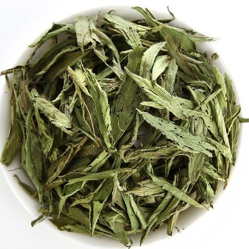

Products Offered
Our Range Of Sure SteviaTM Products
Sure Stevia Dry Leaves
These sun dried leaves are zero calorie natural sweeteners and an excellent substitute for cane sugar. Stevia leaves are 20-30 times sweeter than cane sugar and can be used by obese, diabetics and health conscious people without any compromise in taste. The naturally occurring Steviol glycosides mainly Steviosides and Rebaudiosides are responsible for the sweet taste of the Stevia leaf and can also be extracted to have the compounds in their purified form.
Sure Stevia Liquid Drops

Sure Stevia liquid drops are a combination of Stevia and FOS (Fructooligosaccharides). FOS are zero- calorie, non-carcinogenic sweeteners found in various vegetables and fruits such as onion, garlic, asparagus, banana and tomatoes.
Sure Stevia liquid drops are heat stable and can be used for preparing hot and cold beverages like tea, coffee, lemonade and buttermilk.
1 drop of Sure Stevia liquid is equivalent to 1 teaspoon of cane sugar.
Sure Stevia Extract Powder

Stevia white extract is a natural and healthy substitute of cane sugar, extracted from Stevia leaves. Sure Stevia extract powder is a combination of Steviol glycosides and Erythritol which is also a zero calorie sweetener. Erythritol is approved by all major regulatory bodies present globally and is added to Stevia extract to obtain a flavour similar to that of table sugar (cane sugar). Sure Stevia extract powder can be used for preparing hot and cold beverages, desserts , cakes and more.
1 gm of Sure Stevia extract powder is equivalent to 2 teaspoons of cane sugar in terms of sweetness.